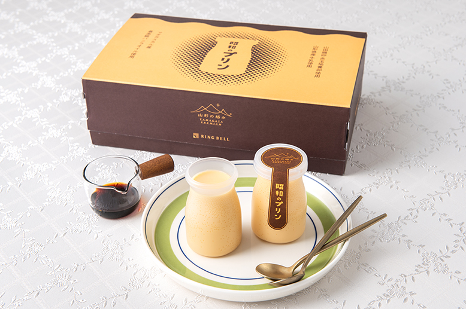
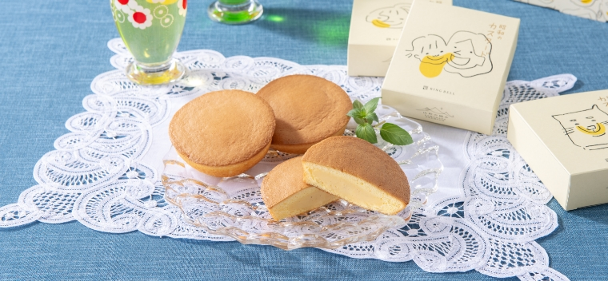

2025年は「昭和百年」。
あたたかく、なつかしいあの頃の味を
「日本の極み」が集めました。
昭和のプリン

「冷蔵庫にプリンがあるよ」
そんな一言に迎えられた日のときめきが蘇る
「冷蔵庫にプリンがあるよ」。家に帰った時、そんなひと言に迎えられた日のときめきが蘇る味。それが「昭和のプリン」です。スプーンですくってみると、ちょっと固め。口に含んでみると、卵の味をしっかりと感じる。カラメルのとろりとした甘さとバニラのやさしい香りがそれに加わって、幸せな気持ちが広がります。
材料はたったの4つ
シンプルな昭和のお菓子だから食べ飽きない
色白で柔らかいプリンが全盛のいま、「シンプルな材料で作った昭和のお菓子は、飽きることなく食べ続けられる」と、山形県長井市で洋菓子店「ブランドォレ」を営む小松龍侍さんが、この「昭和のプリン」作りに挑みました。材料はたった4つ。卵、牛乳、砂糖、香料のバニラ。甘みとコクがある赤玉の地養卵、ほどよい甘さとうまみを持つ牛乳は、どちらも山形県産。
何通りもの組み合わせを試し、ようやく探してた味と食感には、まだ子供だった昭和時代から自分でプリンを作っていたという小松さんのキャリアと、地元・山形の食材への思い入れがたっぷり詰まっています。
昭和のカスタード

老舗菓子舗と試行錯誤でたどり着いた
冷凍で届く「ふんわり懐かしい味」
創業文化8年、山形県の老舗菓子舗の絶品カスタードケーキを、リンベルとのコラボで改良。従来品は賞味期限が短く、遠隔地への発送は困難だったところ、試行錯誤を重ねて、美味しさを損なわずに冷凍することを可能にしました。
バニラビーンズを増量した
クリームは、量自体もたっぷり
マダガスカル産の高級ブルボンバニラビーンズと国産牛乳で作るクリームは、試行錯誤を重ね、従来品よりバニラビーンズを1.5倍に増やした最適なバランスに。また、クリームの量そのものも、生地とのバランスをとりながら限界まで増量しています。
懐かしい「昭和の団欒」の味
ぜひ、たくさんの人と食卓で囲んで
商品のイメージは「昭和の団欒」。さまざまな世代の人が集まって食卓を囲み、昭和のカスタードを頬張りながら口にクリームをつけて団欒のひとときを過ごす楽しいパッケージとなっています。どこか懐かしく、誰もが笑顔になる味を、ぜひお試しください。